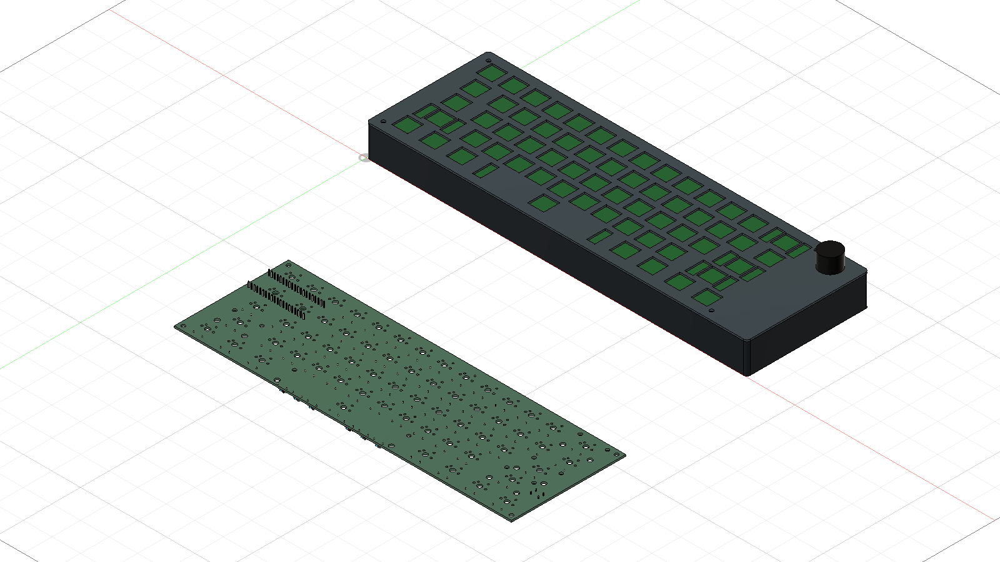
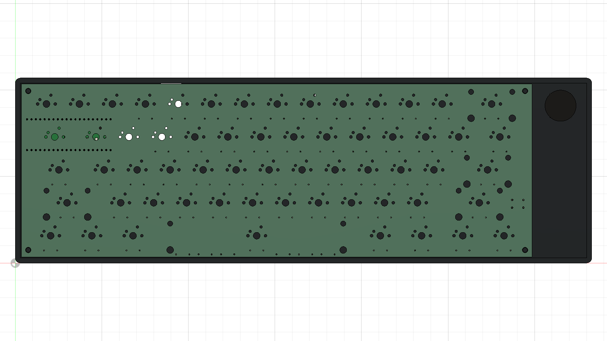
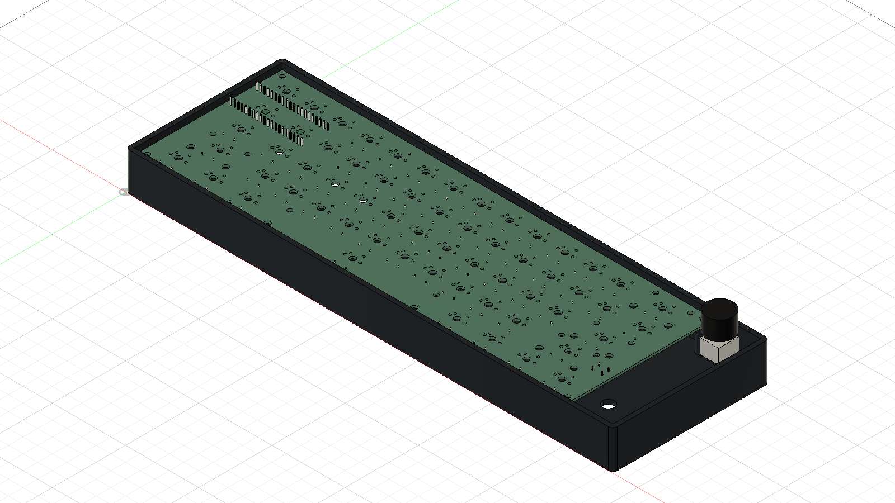
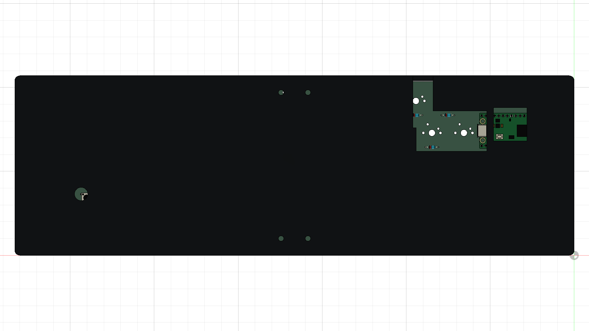
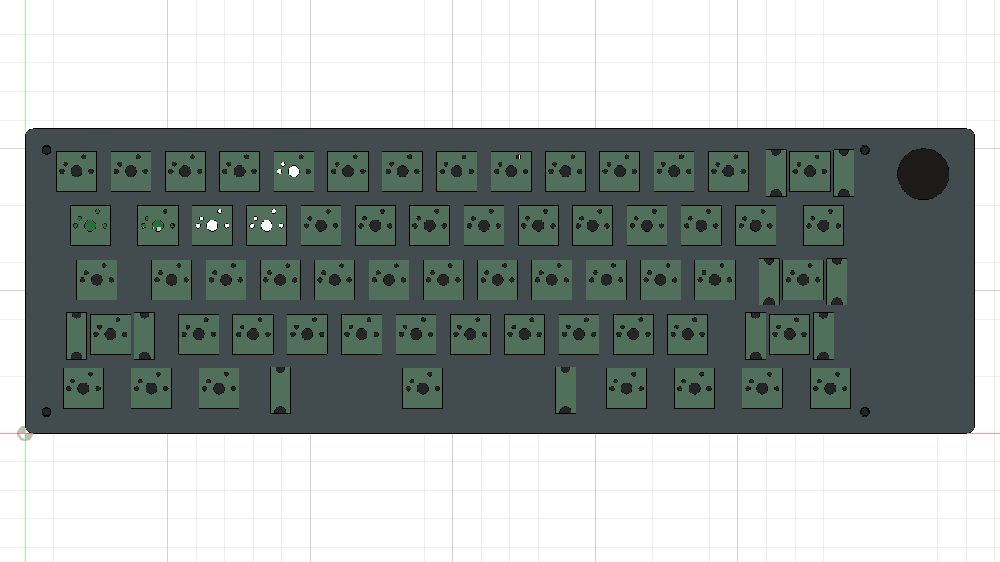
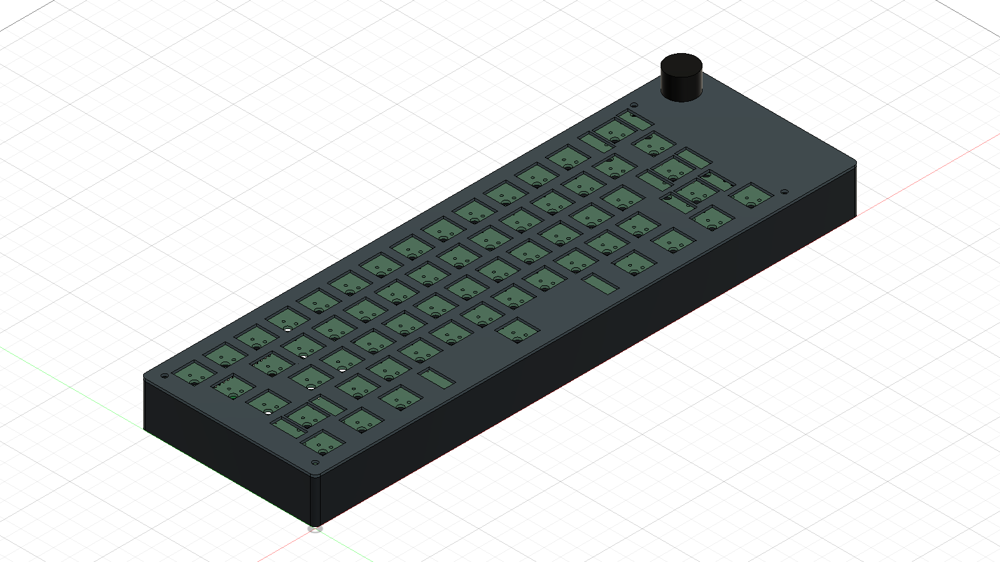

October 12 — CAD assembly process
Actual PCB import, positioning, inspection and spacer installation in Fusion, in capture order.
1. Import the KiCad STEP

Imported the actual KiCad PCB and available component models into Fusion. It initially retained the KiCad origin, outside the case.2. Align the PCB

Translated the PCB into the case coordinate system, matching the board position used for the four mounting bosses.3. Set mounting height

Positioned the PCB underside at 21mm above the case floor origin, with the plate hidden to inspect the placement.4. Inspect underside access

Checked the imported Pico against the USB pocket and BOOTSEL opening. This is a visual inspection; plug insertion and cable bending remain untested.5. Restore the switch plate

Displayed the plate above the PCB to inspect the key-opening alignment. Switch and keycap models are absent from this KiCad export.6. Inspect the combined assembly

Viewed the case, actual PCB and plate together. The knob and encoder remain simplified reference envelopes.7. Add four plate spacers
Imported four spacer solids at the mounting-hole positions, starting at the planned PCB top height of 22.6mm. They provide the 3.5mm plate gap.8. Restore the assembled model
Restored the plate and exported the updated Fusion and STEP assemblies with PCB and spacers included. Physical fit remains unverified.